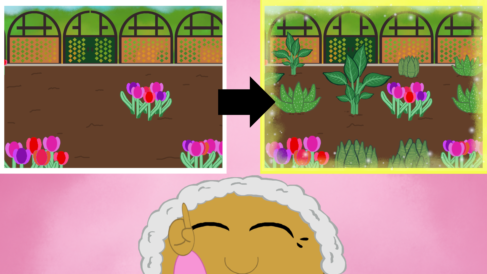
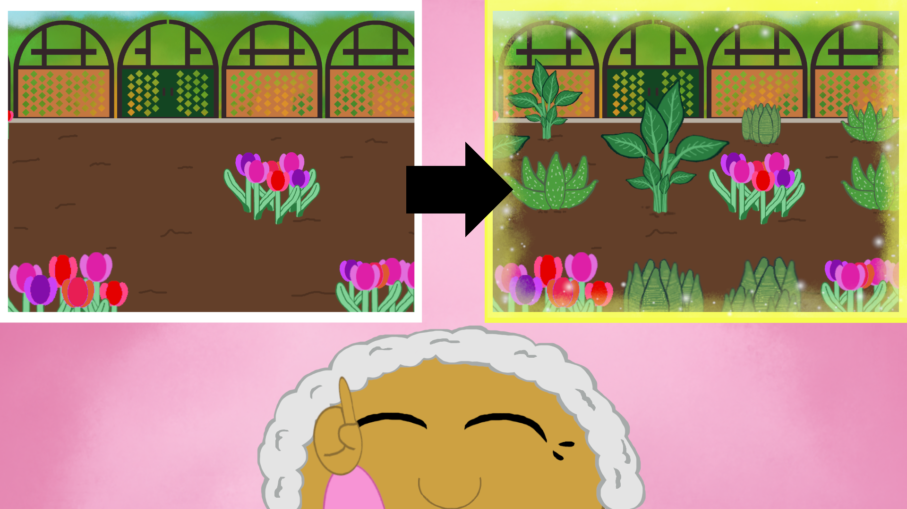
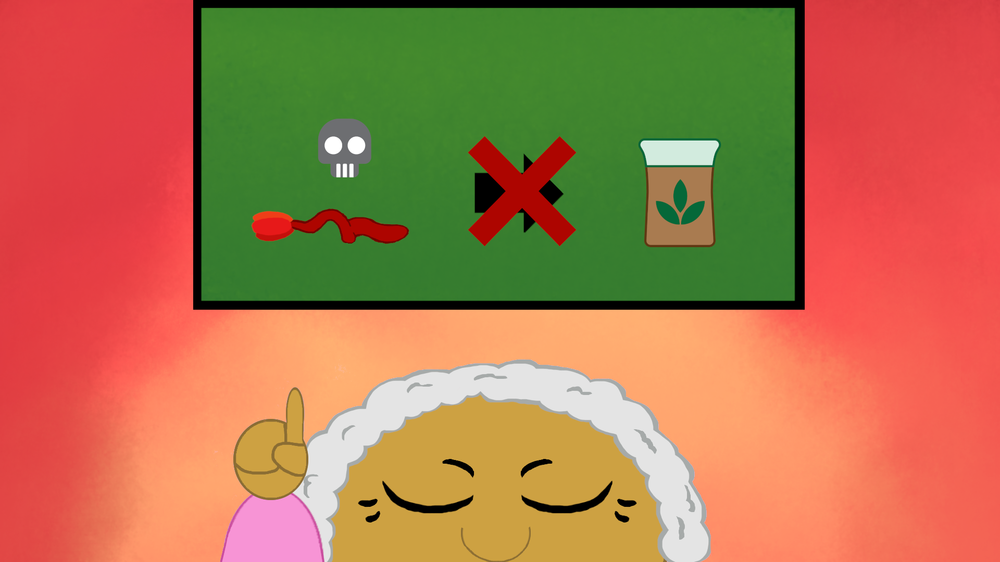
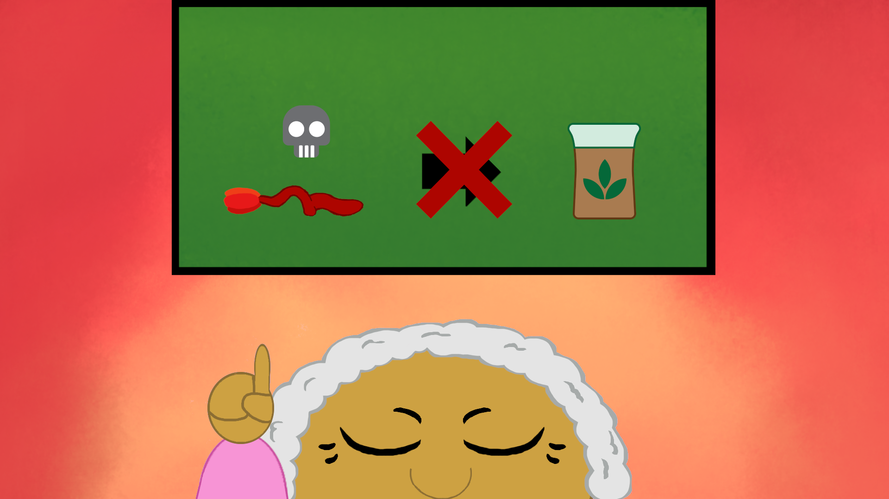
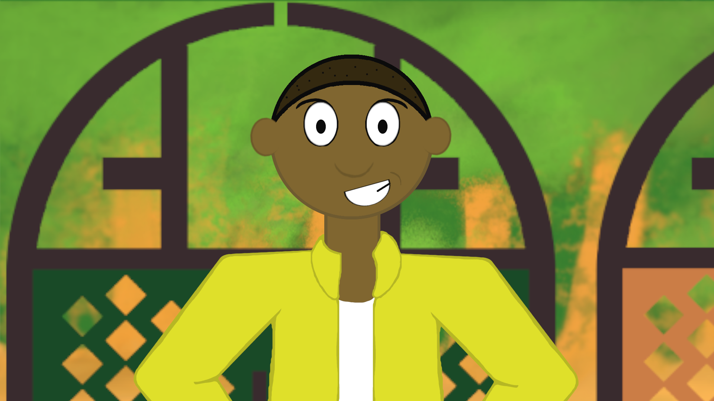
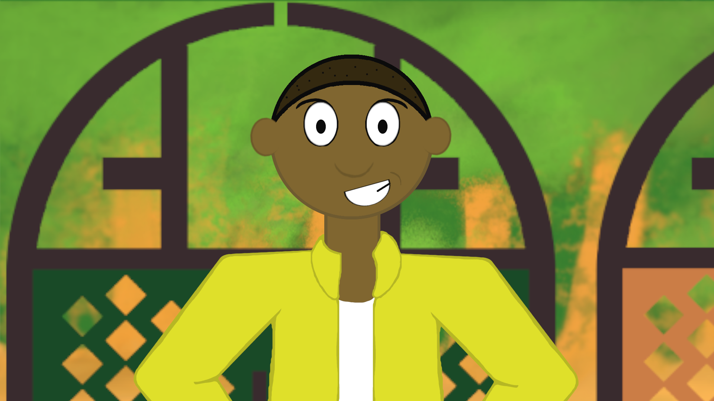

In the winter of 2022, I worked on a game titled Sprout and About, a gardening simulation in which the goal is to fill the garden with all four types of plant. The player does so by waiting for plants to wilt, harvest them to receive mulch, and then using it grow more plants.
GIMP, Adobe Premiere Pro
Game link
2022
More
This game was tricky to make because our professor challenged us to make a game without any text, meaning that we had to find creative ways to instruct people how to play. One of our solutions was to make a video to introduce the context and goal of the game, and it was my job to make it.
We only had 3 weeks to work on the entire game, so I decided to make the intro scene an animatic to save time. I made a storyboard that I would share with classmates and friends to receive feedback to make sure that the story and goal of the game was clearly presented. I then made a new storyboard that I had both the previous people and new people review. Finally, I made each frame on GIMP and then made the video composition on Adobe Premiere Pro.
I made this game for a Game Jam in a Game Design class along side Owen Hellum who handled the programing and additional 2D art and Joseph Boumerhi who made the sounds and music.


 



 

 
